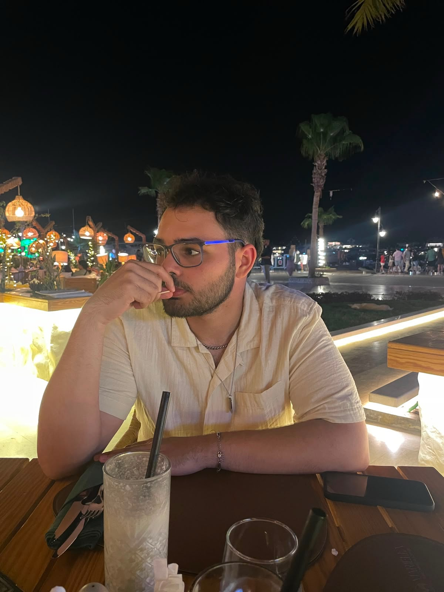

Get to know me better
Hello! I'm Karim Ibrahim, a 23-year-old IT and AI developer based in Antwerp, Belgium. I completed a bachelor's degree in Applied Computer Science at AP Hogeschool and continued with an additional bachelor's degree focused on IT and AI development.
My work now combines application development with data-driven problem solving. I have worked with Python, machine learning, data analysis, and skills extraction, while continuing to build mobile and web applications. I also bring practical experience in IT support, event planning, and team coordination through ASA Antwerp.

Profile image